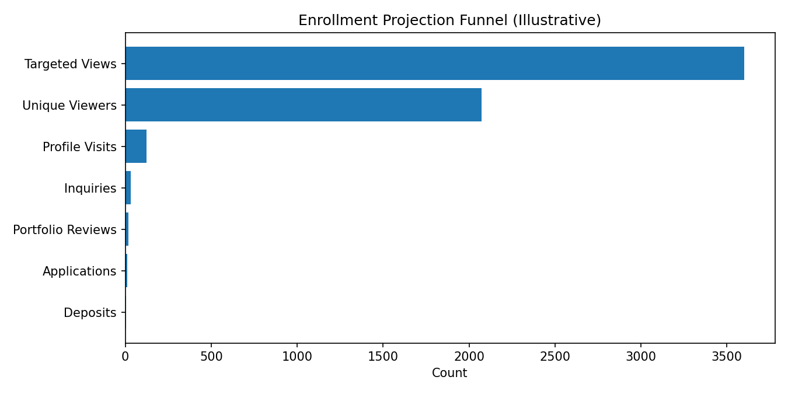

Your MFA Should Take You Places
Enrollment Projection to May 1
Goal: 4–6 deposits by May 1
Using observed behavior + improved conversion CTAs:
• Visit conversion (visits ÷ viewers): ~5.9% (current)
• Assumed conversion after improvements:
– Visits → inquiries: 25%
– Inquiries → portfolio review booked: 60%
– Reviews → applications submitted: 65%
– Applicants → deposits: 50%
Projection requirement (now → May 1):
• ~3,000 to 4,500 targeted views
• ~2,072 unique viewers
• ~123 visits
• ~30 inquiries
• ~18 portfolio reviews
• ~12 applications
• ~6 deposits
Admin takeaway: modest paid reach + stronger CTAs can reliably produce a cohort.
